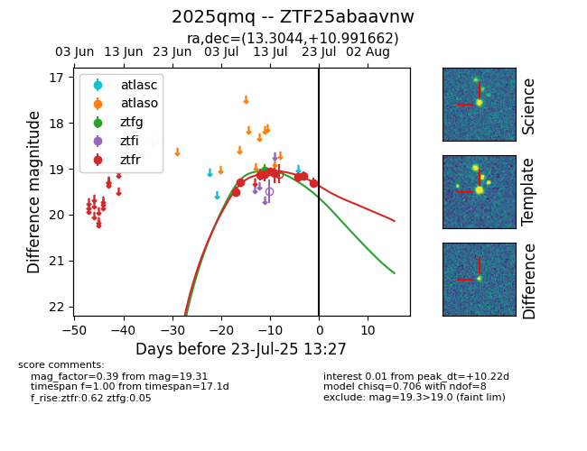

Target ZTF25abaavnw at 2025-07-23 13:27, see:
FINK: fink-portal.org/ZTF25abaavnw
Lasair: lasair-ztf.lsst.ac.uk/objects/ZTF25abaavnw
ALeRCE: alerce.online/object/ZTF25abaavnw
TNS: wis-tns.org/object/2025qmq
YSE: ziggy.ucolick.org/yse/transient_detail/2025qmq
alt names
ZTF25abaavnw (ztf,fink)
2025qmq (tns,yse)
coordinates:
equatorial (ra, dec) = (13.3044,+10.99166)
galactic (l, b) = (123.6394,-51.87764)
photometry
last ztfg=19.06, ztfr=19.31
2 ztfg, 9 ztfr detections
